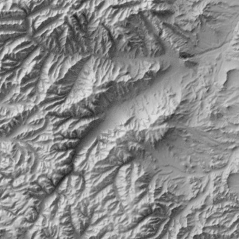

Another (even-number year) August coming to a close and another GeoCart’ is over.
The passing last year of Igor Drecki inevitably cast a shadow. But importantly, and even under that shadow, it was a fun meeting, as Igor would have wanted. Given the current woes of Wellington’s public sector, attendance was as expected down a little, but there were still enough faces old and new for the meeting to retain its usual friendly buzz, without it being too overwhelming.
The organisers of GeoCart’2024 can be proud of what they achieved in putting on a meeting that Igor would have enjoyed. It bore all the hallmarks of Igor’s vision for the meeting. Many keynotes (perhaps too many, but more on that below…) and many opportunities for informal discussion and exchange in the breaks between presentations, over lunch, and at the Icebreaker and Conference Dinner events. The latter in particular was really excellent—I don’t recall ever before having FOUR choices of starter, main, and dessert at a catered sit-down meal like this one: well done Dockside.1
Keynotes
So many keynotes…
A two-and-a-half day meeting with six (yes SIX!) ‘all-hands’ presentations seems perhaps a little too much of a good thing. Having said that, all the keynotes were excellent. Like, really excellent. I didn’t necessarily agree with everything everyone said, but I was certainly engaged throughout. In chronological order:
 Ocean Mercier kicked things off with ‘Te Taunaha Whenua: Mapping Connections to Place’ emphasising the role that maps and mapping play in defining and making place, and the more than coincidental relationship between those processes and colonisation and (yay!) decolonisation. I loved that Ocean also shared her longtime passion for orienteering— and its slightly goofy (but highly functional) maps. She was even heading off :rogaining one evening of the conference.2
Ocean Mercier kicked things off with ‘Te Taunaha Whenua: Mapping Connections to Place’ emphasising the role that maps and mapping play in defining and making place, and the more than coincidental relationship between those processes and colonisation and (yay!) decolonisation. I loved that Ocean also shared her longtime passion for orienteering— and its slightly goofy (but highly functional) maps. She was even heading off :rogaining one evening of the conference.2
Daniel Huffman in their presentation ‘Sharing the Emotional Work of Mapping’ spoke to a topic that has been front of mind for me lately: the rollercoaster ride of the uncertainties of taking on projects as they appear, and balancing ambitions for your creative work against the expectations of paying clients. I have to confess to some disappointment that we didn’t get some Huffman eye candy along the way, but instead had to content ourselves with :Madison, Wisconsin’s—admittedly very nice—flag.
 Daniel O’Donohue. After Daniel H’s quietly reflective take on the emotional journey of making maps, next morning podcaster and self-described geospatial evangelist Daniel O
Daniel O’Donohue. After Daniel H’s quietly reflective take on the emotional journey of making maps, next morning podcaster and self-described geospatial evangelist Daniel O gave everyone a good kick in the pants encouraged us all to get busy making millions on the interwebs. Some of this talk leaned a bit too much for cycnical old gen-X-er me into the social media influencer vibe, but more than a couple of people were taking notes, and I expect to see mass-market cartography rocket to the top of Aoteroa’s export earnings charts in the years to come. Seriously though, I did have a couple of conversations with folks prompted by this talk to explore the possibilities for getting paid more for their skills. Being underpaid is a problem in cartography/geospatial,3 so I wish them all the best, and will join them, just as soon as I come up with an idea. Also: we all got socks.4
 David Garcia somehow managed to keep the energy going in a talk entitled ‘Revisiting the Social Nature of Mapping’. As in Daniel O’s talk, the memes were flowing, but so were the serious messages echoing both Ocean’s and Daniel H’s talks from the previous day in taking seriously the emotional heft of cartography, and its roles in colonisation and decolonisation. The recently minted Dr. Garcia wears his learning lightly and with great good humour, but his work is deeply serious. For a sense of just how serious, here’s the thesis in full. I have made my own (marginal) contributions to critical GIS and critical cartography, and even managed to inject a little of it into the program at VUW but I still learned a great deal from this talk (and I also laughed a lot…).
David Garcia somehow managed to keep the energy going in a talk entitled ‘Revisiting the Social Nature of Mapping’. As in Daniel O’s talk, the memes were flowing, but so were the serious messages echoing both Ocean’s and Daniel H’s talks from the previous day in taking seriously the emotional heft of cartography, and its roles in colonisation and decolonisation. The recently minted Dr. Garcia wears his learning lightly and with great good humour, but his work is deeply serious. For a sense of just how serious, here’s the thesis in full. I have made my own (marginal) contributions to critical GIS and critical cartography, and even managed to inject a little of it into the program at VUW but I still learned a great deal from this talk (and I also laughed a lot…).
 Sarah Bell introduced the final day with an emotionally5 nuanced presentation pushing us to carefully consider the many ways that maps can be biased. So far so obvious,6 but this talk added a few more dimensions for the manipulation of an audience, most poignantly sound, in an animated revisiting of Snow’s cholera data. As co-author of a book whose first edition cover featured :the John Snow map, I was fully prepared to yawn my way through that part of the presentation, but this was very compelling.
Sarah Bell introduced the final day with an emotionally5 nuanced presentation pushing us to carefully consider the many ways that maps can be biased. So far so obvious,6 but this talk added a few more dimensions for the manipulation of an audience, most poignantly sound, in an animated revisiting of Snow’s cholera data. As co-author of a book whose first edition cover featured :the John Snow map, I was fully prepared to yawn my way through that part of the presentation, but this was very compelling.
{kind=link}
 And finally, Wendy Shaw Toitū Te Whenua - Land Information New Zealand and Secretary of Ngā Pou Taunaha o Aotearoa - New Zealand Geographic Board, on the 100th anniversary of the board, updated us on progress in the ongoing consideration and restoration of Māori placenames across Aotearoa. The quick summary is that much has been done, and that much remains to be done. I scored a couple of the associated maps to add to Daniel O’s socks.
And finally, Wendy Shaw Toitū Te Whenua - Land Information New Zealand and Secretary of Ngā Pou Taunaha o Aotearoa - New Zealand Geographic Board, on the 100th anniversary of the board, updated us on progress in the ongoing consideration and restoration of Māori placenames across Aotearoa. The quick summary is that much has been done, and that much remains to be done. I scored a couple of the associated maps to add to Daniel O’s socks.
Too much of a good thing?
So… I’ll say it again: all the keynotes were excellent. I can’t help wondering even so, if this balance in the meeting foregrounds the accomplishments of the already well-recognised, to the disadvantage of the great work being done by others.
I am only really say this comparing GeoCart’s complement of keynotes relative to other conferences of similar size, where there is more likely to be one keynote a day, not two. In part the meeting follows this schedule to justify its two-and-a-half day duration so that there is space for two evening social events. There is likely not enough submitted work to make for two parallel tracks of presentations over that length of time. But I do wonder if in a small meeting like this two tracks are really needed. Cutting things back to three keynotes and a single track would make this a non-issue—and nobody would have to miss any of the talks!
But really, it’s not actually a problem, especially not if the keynotes can maintain this level of quality. And I know that for Igor a key mission for GeoCart was to connect cartography in Aotearoa New Zealand with the wider world, and keynotes from afar are one important way to do this. And having our visiting keynotes see the quality of the work in Aotearoa as exemplified in the ‘home team’ keynotes doesn’t hurt either.
One thing I do know is that finding that many keynote-worthy speakers every two years is a challenge: don’t hesitate to offer suggestions to the NZGS Committee!
Other highlights
As noted, with two tracks, you can’t catch ’em all, so this is inevitably a partial perspective… but among the highlights for me were:
Karl Baker spoke with great good humour and impressive clarity about the often rather sorry tale of the mishandling of New Zealand’s longest placename in maps. Say it with me: Te Taumatawhakatangihangakōauauotamateaturipūkākāpikimaungahoronukupōkaiwhenuakitanatahu.7 You can get some insight into the sorry tale of the use and abuse of the name from the wikipedia talk page for the place name, and there’s a concise correct pronunciation :here.
Andy Tyrell presented a really cool workflow for automating the production of linework style oblique terrain maps like these.
Craig Devereux’s map of the Roman Empire which won the map contest was a standout and hard to beat.
Jessie Colbert’s presentation of work with Katarzyna Sila-Nowicka and Dan Exeter visualising maps of multiple deprivation was a model of completeness and clarity. I hope to maybe get involved in this work with my ‘dots within dots’ and weaving contributions.
Sam van der Weerden gave a great great talk about Maynard Design’s work on the mapping for Auckland’s cycle network. Really interesting: particularly so was the insight that perhaps as cartographers we should sometimes resist our instinct to differentiate things by colour. After all, no matter what kind of cycle path it is, it’s still a cycle path and should be coloured green, and perhaps the less important differences among types of cycle path should be differentiated by line style not colour!
Did I mention the dinner at Boatshed?
{kind=link}
Society business
Also worth mentioning, the New Zealand Cartographic Society after somewhat inexplicably being refused permission to dual list its name in English and te reo Māori way back in 1989 (when doing so would have been well ahead of the curve) is finally en route, remaining bureaucratic hurdles notwithstanding, to adopting a te reo Māori name: Te Rōpū Tuhi Whenua o Aotearoa.
Finally, permit me a moment of self-promotion
I enjoyed giving a talk on time-space maps of mountainous terrain. Here, as a bonus is an animated time-space map of a loop walk around Taranaki Maunga, which probably should have made it into the talk, but for one reason or another did not.

Footnotes
Disclaimer: I have not been recompensed in any form by Dockside.↩︎
That word rogaining is very weird derived from the given names of its ‘inventors’ ROd, GAil, and NEil. The names of new sports aren’t what they used to be: see also pickleball.↩︎
This recent episode of the MapScaping podcast is thought-provoking on the subject.↩︎
I’m wearing mine now.↩︎
There’s that word again.↩︎
Monmonier’s How To Lie With Maps anyone?↩︎
I’ve gone with the longer not yet official form.↩︎